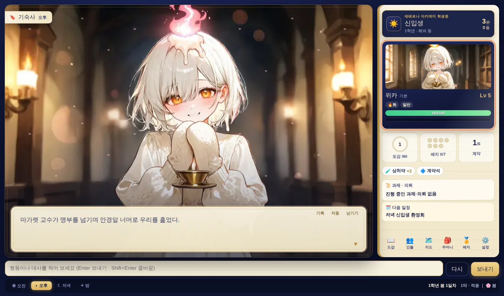

채팅창 대신 배경·대사창·상태창·선택지가 있는 게임 화면으로. 크리에이터 히리온의 작품을 가장 생생하게 즐기는 무료 앱이에요. PC와 안드로이드 폰에서 쓸 수 있어요.
크랙의 응답을 CRION이 읽어 한 장면씩 연출해요. 대화는 그대로 크랙에서 이어지고, 화면만 게임이 돼요.
긴 답장을 스크롤하지 마세요. 배경과 인물 그림이 바뀌고, 이름표 달린 대사창으로 한 줄씩 읽어요.

응답 속 선택지를 따로 모아 보여 줘요. 그대로 고르거나, 덧붙이거나, 완전히 새로 써도 돼요.
작품마다 맞춘 연출이 들어 있어요. 새 동료가 나타나면 카드가 펼쳐지고, 도감과 인물록이 플레이와 함께 채워져요.
새 작품과 개선 사항이 켜 두기만 하면 알아서 들어와요.
작품 전용 화면을 골라 받아요. 미리 보고, 언제든 끌 수 있어요.
작품마다 여러 세이브. 하던 대화로 바로 돌아가요.
교실, 들판, 투기장… 장면에 맞는 음악이 흘러요.
버튼 하나로 원래 크랙 화면을 언제든 볼 수 있어요.
공지·건의·버그 신고를 앱 안에서 바로 보내요.
플레이팩은 작품에 맞춰 만든 전용 화면이에요. 스토어에서 골라 받고, 언제든 끌 수 있어요.
안개 너머 외딴섬의 소환 아카데미. 첫 파트너와 함께 실습·과제·배틀을 거쳐 일곱 교수의 배지와 300년간 아무도 완성하지 못한 도감에 도전해요.
좀비가 뒤덮은 해령시, 유일하게 버티는 석벽빌라의 관리인이 되어 주민을 받고, 물자를 모으고, 100일을 살아남아요.
8년의 잠에서 깨어난 마왕. 권능 다섯 조각은 지금, 스타가 된 마법소녀들의 손에 있어요. 반지하 어전에서 작전을 짜고 왕관을 되찾아요.
위의 Windows용 무료 다운로드를 눌러 CRION-Setup.exe를 받아요.
받은 파일을 열면 자동으로 설치되고 CRION이 바로 열려요.
왼쪽 아래 크랙 로그인으로 크랙 계정에 로그인한 뒤, 작품을 골라 시작해요.
Apple 칩(M1~M4)이면 Mac (Apple 칩), 예전 Mac이면 Mac (Intel)을 받아요. 모르면 메뉴 → 이 Mac에 관하여에서 확인해요.
받은 파일을 열고 CRION 아이콘을 응용 프로그램 폴더로 끌어다 놓아요.
처음 한 번은 CRION을 우클릭 → 열기로 열어요. 다음부터는 그냥 열려요.
xattr -cr /Applications/CRION.app폰에서 이 페이지를 열고 Android(또는 안드로이드용 무료 다운로드)를 눌러 CRION-android.apk를 받아요.
다운로드 알림이나 내 파일 → 다운로드에서 받은 파일을 눌러요. “출처를 알 수 없는 앱” 안내가 뜨면 설정 → 이 출처 허용을 켜고 돌아와 설치를 눌러요.
아래 메뉴의 크랙 로그인으로 로그인한 뒤 작품을 골라 시작해요. 폰은 세로 화면 전용이에요.
네, CRION과 플레이팩은 모두 무료예요. 대화는 크랙에서 이뤄지니 크랙의 이용 방식(무료 이용량, 유료 기능 등)은 크랙과 같아요.
네, 크랙 계정이 필요해요. 로그인은 CRION 안에 열린 크랙 공식 로그인 화면에서 직접 해요. CRION은 비밀번호를 따로 받거나 저장하지 않아요.
보내지 않아요. 선택지나 버튼은 입력칸을 채워 줄 뿐이고, 보내기를 한 번 누르면 딱 한 번만 보내요. 자동으로 반복해서 보내는 기능은 없어요.
CRION은 히리온의 작품을 위해 만든 앱이에요. 홈 화면에 히리온의 작품이 모여 있고, 플레이팩이 있는 작품은 전용 화면으로, 없는 작품은 크랙 화면 그대로 플레이해요.
안드로이드 폰은 돼요. 이 페이지를 폰에서 열고 Android를 눌러 CRION-android.apk를 받아 설치하세요 (아래 설치 방법의 Android 탭). 아이폰용은 아직 없어요 — 아이폰에서는 크랙 앱으로 같은 대화를 이어서 할 수 있어요.
설정에서 성인 작품 보기를 켠 경우에만 보여요. 크랙에서도 성인 인증을 마친 계정이어야 플레이할 수 있어요.
앱 왼쪽 메뉴의 커뮤니티에서 버그 신고와 건의를 바로 보낼 수 있어요. 화면 진단 정보도 함께 붙일 수 있어 빠르게 고칠 수 있어요.